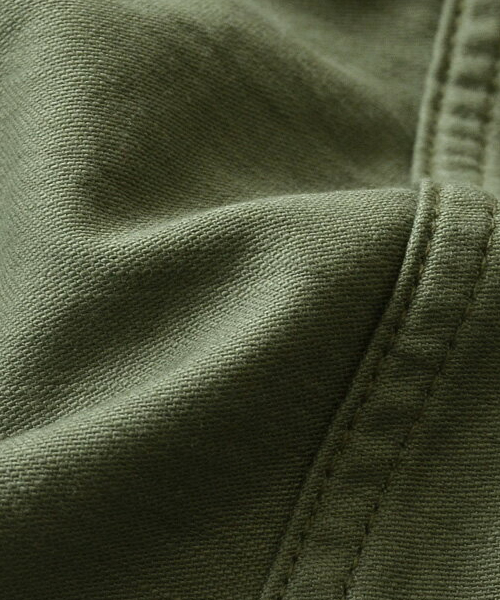
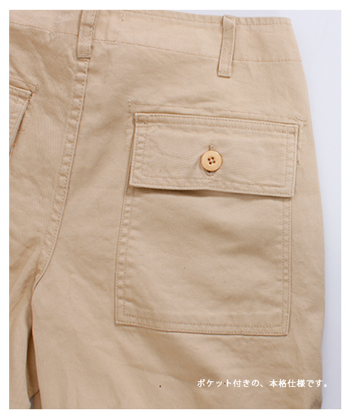
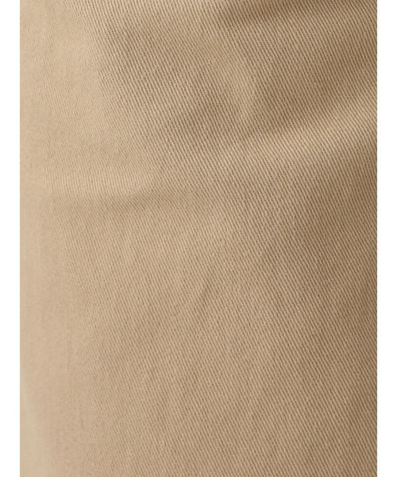
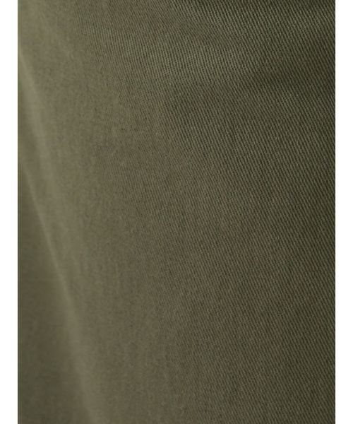
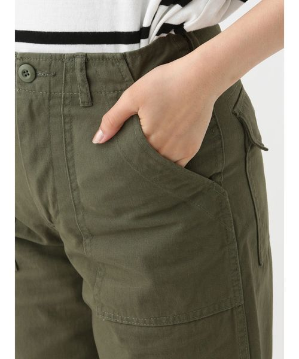
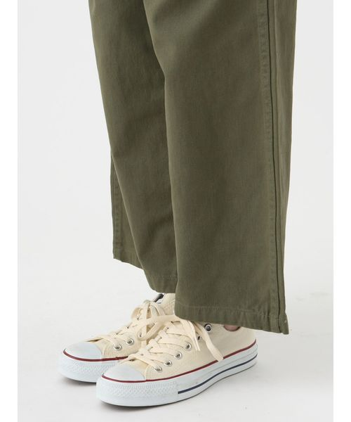
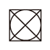
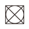

新しいワークパンツとして要注目の「ベイカーパンツ」。
ワイドめのストレートなシルエットに、サイドとバックの大きなポケットが特徴です。
スラブ感のある風合い豊かなコットン生地を使用し、
使いやすいスタンダードな色合いを揃えたカラーバリエーション。
一年中 季節を問わずお使いいただけます。
| サイズ | ウエスト | 股上 | 股下 | すそ周り | もも周り | ヒップ |
|---|---|---|---|---|---|---|
| SMALL（S） | 71 | 31 | 73 | 48 | 60 | 95 |
| MEDIUM（M） | 74 | 32 | 72 | 50 | 62 | 98 |
 
